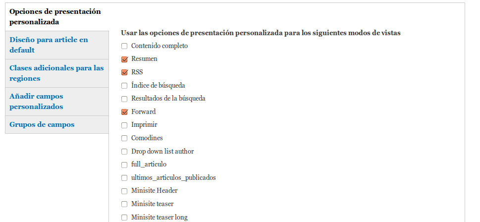
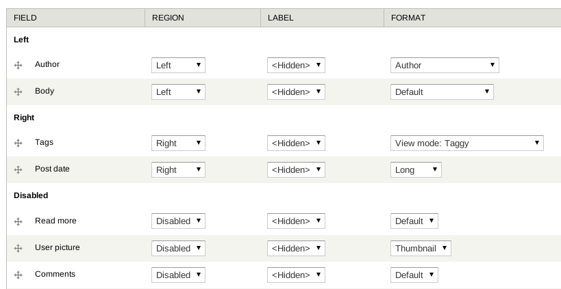
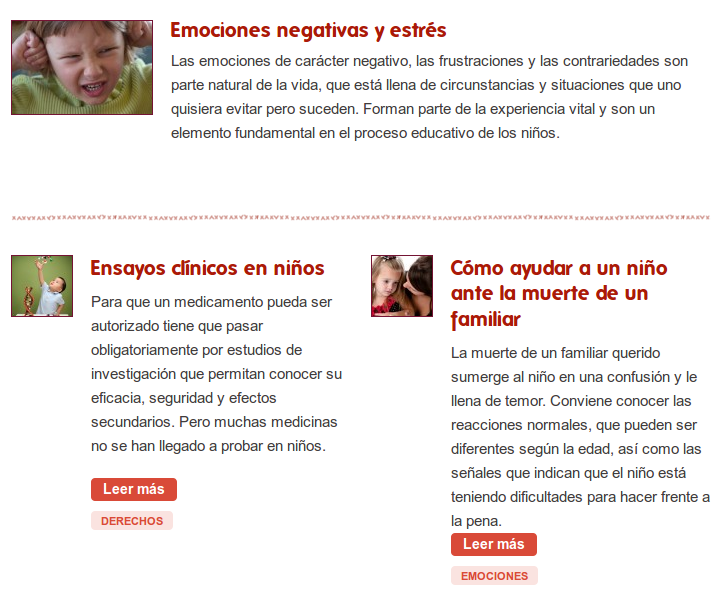

Your browser doesn't support the features required by impress.js, so you are presented with a simplified version of this presentation.
For the best experience please use the latest Chrome, Safari or Firefox browser.
¡No todo va en el TPL!
Moises Rodriguez Carmona
Brown cleaner
Crononauta
Mateu Aguilo Bosch
Drupal Evangelist
Crononauta
Crononauta
Somos un equipo de desarrolladores web y administradores de sistemas con amplia experiencia. Ofrecemos servicios de definición y gestión de proyectos, desarrollo a medida y administración de sistemas.
Estamos especializados en PHP, Drupal y Ruby On Rails. Estudiamos cómo aprovechar aún más la tecnología conocida (MySQL, Varnish) y aplicamos con éxito tecnologías más recientes (MongoDB, memcached, APC). Tenemos amplia experiencia en distintas infraestructuras de sistemas (Linode, Amazon, CDNs).
Temas en Drupal
¿Qué es un tema?
Un conjunto de ficheros que nos van a permitir cambiar el aspecto del sitio Drupal.
En drupal.org tenemos muchos temas (+ 1025).
live
Veamos…
Estructura de ficheros del tema
Temas padres e hijos
En Drupal está permitido crear un tema a partir de otro.
Hereda del padre:
- Ficheros CSS
- Ficheros Javascript
- template.php
- Ficheros tpl
- Captura de pantalla
No se hereda:
- Logo
- Favicon
- Regiones añadidas
- Características añadidas
- Fusion
- Zen
- Omega
- Adaptative Theme
Fichero .info
name = Spongebob Theme
description = A fully featured theme for fondo-bikini.es
base theme = fusion_core
core = 7.x
engine = phptemplate
stylesheets[all][] = css/style.css
scripts[] = js/scripts.js
; --------------------------------------------------------------------------------
; Regions.
; --------------------------------------------------------------------------------
regions[sidebar_first] = Sidebar first
regions[sidebar_second] = Sidebar second
regions[header_top] = Header top
regions[header] = Header
regions[main_menu] = Main menu
regions[content] = Content
regions[footer] = Footer
regions[page_top] = Page top
regions[page_bottom] = Page bottom
; --------------------------------------------------------------------------------
; Define features supported by this theme.
; --------------------------------------------------------------------------------
features[] = logo
features[] = name
features[] = slogan
features[] = favicon
; --------------------------------------------------------------------------------
; Default theme settings.
; --------------------------------------------------------------------------------
settings[theme_grid] = grid12-960
...
template.php
El archivo template.php define una serie de funciones que se encargan de procesar y dejar disponibles una serie de variables para su uso en las plantillas.
Plantillas basicas en un tema
¿Que deberia ir en un TPL?
Poca cosa:
Básicamente sólo debería ir aquí:
if, print, render, isset, empty…
<article<?php print $attributes; ?>>
<div class="pre-content clearfix">
<header class="grid-4 prefix-1">
<div class="patrick-friend">
<?php print $field_square; ?>
</div>
<div class="header-container">
<div class="image-wrapper-krusty-krab">
<?php
print render($content['field_pants']);
?>
</div>
…
print render($content['field_pants']);
?>
</div>
…
<?php print render($title_prefix); ?>
<h2<?php print $title_attributes; ?>>
<a href="<?php print $node_url ?>"
title="<?php print $title ?>">
<?php print $title ?></a></h2>
<?php print render($title_suffix); ?>
</div>
</header>
…
…
<nav class="links-wrapper">
<?php print render($content['links']); ?>
</nav></div>
<div<?php print $squidward_attributes; ?>>
<?php if ($display_submitted): ?>
<footer class="submitted">
<?php print $name; ?></footer>
</div>
<?php
hide($content['field_pinapple']);
hide($content['field_square_pants']);
print render($content);
?>
</div>
<p><?php
print render($content['field_pinapple']);
?></p>
</article>
¿De donde saco esas variables?
Cálculo de datos necesarios:
- Módulo
- Función de preprocesado
Renderizados finales:
Es típico que haya muchas implementaciones de preprocesado que se convierten en HTML al final en el procesado.
Whaaaaaat?! (I/II)
function mytheme_preprocess_node(&$variables) {
// Añadimos clases para el nodo
$classes_array[] = 'sponge';
}
En nuestro template.php implementamos función de procesado para poder añadir una clase.
Whaaaaaat?! (II/II)
function node_process_node(&$variables) {
// […]
$classes = implode(' ', $classes_array);
}
El módulo node recoge todas las clases en el array y genera el string que insertaremos en el TPL.
Recapitulando
- Los módulos calculan/recuperan/generan datos.
- Los themers los recogen y los preparan en el (pre)procesado.
- En el TPL se insertan los datos rodeados de HTML.
Casos de horror error!
- El preprocess_block maldito
- El caso de los datos fantasma.
¡Bonus!
Pedimos disculpas por los mareos ocasionados.
Modulos que nos facilitan la vida a los themers
- Display Suite
- Skinr - Fusion Accelerator
Display Suite
Control completo sobre:
- Formulario creación/edición contenido.
- Modos de visualización.
Display SuiteModos de visualizacion

Disponibles en views.
Display SuiteInterfaz

Display SuiteResultados

Skinr - Fusion Accelerator
Permiten definir un conjunto de estilos CSS reusables y que pueden ser aplicados mediante interfaz.
- Skinr (Drupal 6 y 7) http://drupal.org/project/skinr
- Fusion Accelerator (Drupal 7) http://drupal.org/project/fusion_accelerator
¡No todo va en el TPL!
¿Preguntas?
¡No todo va en el TPL!
Gracias :)
Mateu Aguiló Bosch
Drupal Evangelist
Moisés Rodríguez Carmona
Brown cleaner